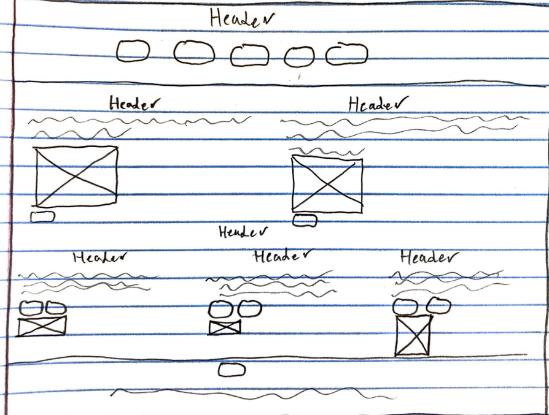
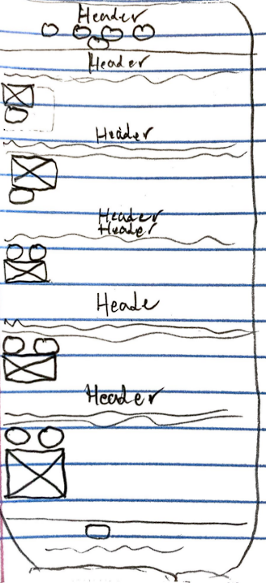
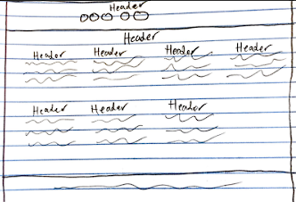
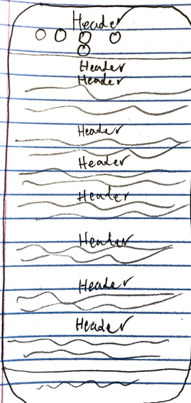
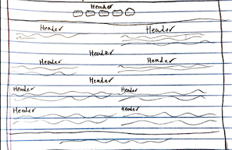
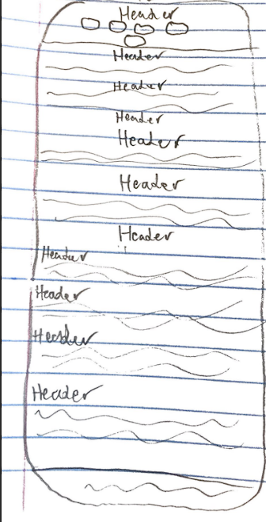
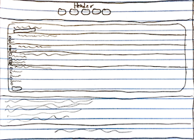
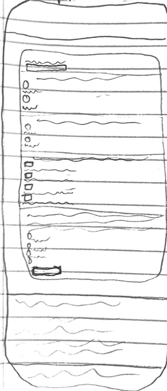
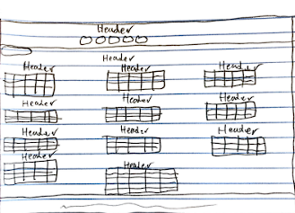
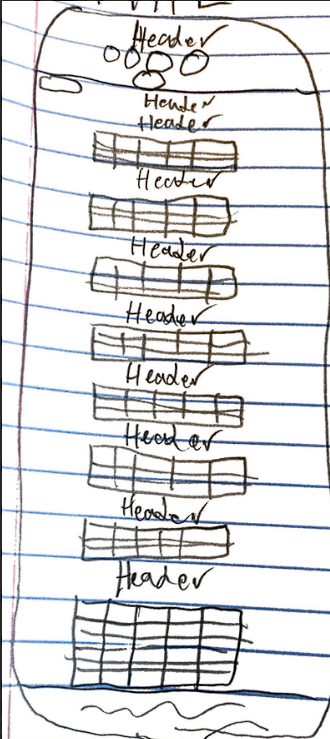

Project Overview
I will be making an very short online course going over the bare bones basics about accounting software and how they work. The wireframes have only two sizes due to all the pages only having two layouts.
Page 1: Home Page
This page will give a basic overview of why people use accounting softwares and popular accounting softwares.
Large/Medium

Small

Page 2: Accounts
This page will give the first lesson on some types of accounts, how different account types differ, and when to use which account type.
Large/Medium

Small

Page 3: Transactions
This page will give the second lesson on what a transaction is, important aspects of a transaction, and how to make a transaction
Large/Medium

Small

Page 4: Quiz
This page will quiz you on what you learned. Just a note the last question is unfair but it is true.
Large/Medium

Small

Page 5: Transactions Breakdown
This page will read through a CSV of transactions, display the transactions with their own table, validate the transactions, and give an account break down of the accounts after.
Large/Medium

Small

Color Scheme
The color scheme I went with was split complementary along with black and white because they go great with any colors. #FFD359 #000000 #0B3954 #FFFFFF #C4D7E6
| Background Color | Text Color | Ratio |
|---|---|---|
| #000000 | #FFD359 | 14.71:1 |
| #C4D7E6 | #0B3954 | 8.22:1 |
| #0B3954 | #C4D7E6 | 8.22:1 |
| #0B3954 | #FFD359 | 8.51:1 |
| #FFD359 | #0B3954 | 8.51:1 |
Sticker Sheet
Table
Creates an easy to read table defining the header row from the data rows. For reference look at the color contrasnt table.
Page
Creates the set up for the page, header, nav bar, and footer all in one. For reference look at this page or any of the five main pages.
Form
Creates a form that is easy to read and is placed in the middle of the page. For Reference